Эта мини-рампа имеет высоту 914 мм (от земли до верха деки), ширину 2,44 м и длину 7,32 м от края до края (включая обе деки).
Эту мини-рампу можно построить любого нужного вам размера. Однако, чтобы список материалов был точным, нужно следовать приведенным ниже чертежам.
Имейте в виду: размеры этой рампы выбраны не случайно. Я потратил недели на проектирование рампы, которая была бы экономной по стоимости и материалам, удобной для катания и, самое главное, прочной и безопасной.
Дерево и крепеж можно найти в большинстве строительных магазинов. Иногда там же продается и сталь: например, в моем местном Home Depot есть материал для копинга и порога.
Если нет, можно поискать в интернете металлобазы, изготовителей металлоконструкций или б/у сталь. Лично я начал покупать сталь на MetalsDepot.com из-за быстрой доставки и хороших цен. Я никак с ними не связан, мне просто нравится их товар.
Если рампа будет стоять на улице, ее нужно защитить от погоды. Начать стоит с пропитанной древесины, краски и тента. Также можно вложиться в композитное покрытие, например Skate Lite или Ramp Armor.
Будьте особенно осторожны при работе с пропитанной древесиной: химикаты для обработки содержат ядовитый пестицид.
Примерная стоимость: $500
Легко | | | | | Сложно
В идеале лучшее место для мини-рампы - ровная подъездная дорожка или бетонная площадка. Но рампы получаются довольно большими, поэтому задний двор или поле часто оказываются единственным достаточно просторным вариантом.
Если вы ставите мини-рампу на грунт, нужно сделать опоры или площадки, на которых будет стоять халфпайп. Это можно сделать примерно так же, как строят террасу у дома, используя бетонные блоки.
Про основания для рамп я написал отдельную страницу, потому что в один абзац это не уложить.
Ниже приведена карта раскроя с нужными деталями и их размерами.
| Дерево | ||
|---|---|---|
| Кол-во | Материал | Размер |
| 34 | доска примерно 38 x 89 мм | 2,40 м |
| 4 | доска примерно 38 x 89 мм | 838 мм |
| 15 | доска примерно 38 x 89 мм | 2,36 м |
| 2 | доска примерно 38 x 89 мм | 2,44 м |
| Фанера и мазонит | ||
| Кол-во | Материал | Размер |
| 4 | фанера 19 мм | боковины по схеме |
| 2 | фанера 19 мм | 838 мм x 2,44 м |
| 9 | фанера 9,5 мм | 1,22 x 2,44 м |
| 2 | фанера 9,5 мм | 610 мм x 2,44 м |
| 5 | мазонит 6,4 мм | 1,22 x 2,44 м |
| Сталь | ||
| Кол-во | Материал | Размер |
| 2 | труба, наружный диаметр 60,3 мм | 2,44 м |
Возьмите два листа фанеры толщиной 19 мм для боковых шаблонов. Из одного такого листа получится две боковины. 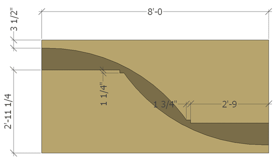
* Размеры на схеме продублированы метрическими подписями.
Используйте фанеру CDX или лучше. ДСП для скейт-конструкций неприемлема, без исключений.
Лобзиком очень аккуратно режьте по линиям, которые вы начертили для радиуса. После вырезания используйте эту деталь как шаблон для трех оставшихся боковин.
Для каждой секции рампы шириной 2,44 м нужны только две боковины из фанеры толщиной 19 мм. Большинство рамп делают секциями по 1,22 м, но эта рампа достаточно небольшая, чтобы использовать пролет 2,44 м. Вырежьте шаблоны и отложите их.
Возьмите доску примерно 38 x 89 мм длиной 2,44 м и на одном конце просверлите отверстие диаметром с карандаш (примерно 9,5 мм). Затем от этого отверстия отмерьте длину радиуса перехода - в данном случае 1,83 м. Вкрутите туда шуруп, но пока не проходите им доску насквозь.
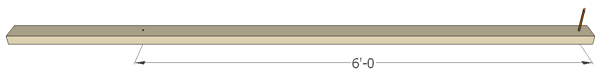 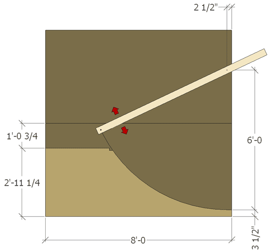
* Размер на схеме продублирован метрической подписью.
Возьмите фанеру толщиной 19 мм и положите ее на достаточно ровную поверхность. Возьмите еще один лист фанеры и положите рядом с фанерой 19 мм, как показано ниже.
* Размеры на схеме продублированы метрическими подписями.
С помощью подготовленной доски вкрутите шуруп в верхний лист фанеры в показанной точке. Затем проведите радиус, используя доску как направляющую для карандаша, пока линия радиуса не станет четко видна на листе фанеры 19 мм.
После разметки отмерьте вверх 895 мм от нижнего левого края. С помощью прямой рейки отметьте эту точку и вырез под копинг, чтобы завершить боковину. Вырез под копинг: 32 x 44 мм.
Подготовьте тридцать четыре доски примерно 38 x 89 мм длиной 2,40 м для радиусных секций. На каждую секцию шириной 2,44 м требуется семнадцать таких досок, включая часть деки.
Возьмите пять таких досок длиной 2,40 м и начните собирать секцию: две доски поставьте сзади, одну спереди и две сверху рядом с вырезом под копинг, как показано выше.
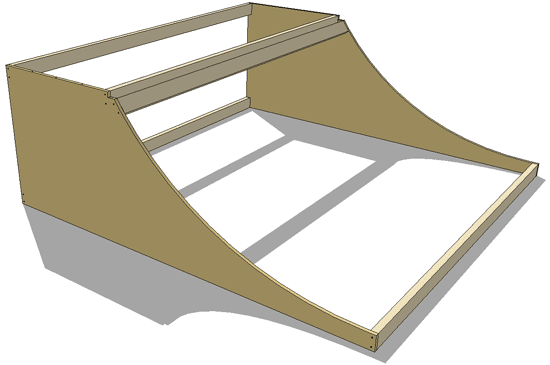
Установите две доски примерно 38 x 89 мм длиной 838 мм под доски деки в местах, показанных ниже. Для крепления каждой используйте примерно восемь шурупов 41 мм.
Они добавляют деке дополнительную опору и должны стоять с каждой стороны обеих радиусных секций.
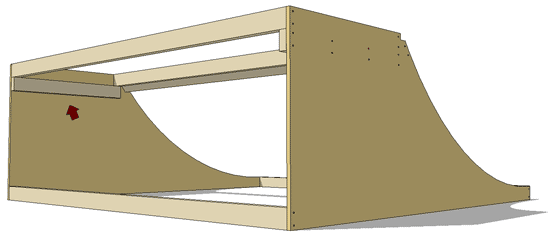
Теперь закрепите двенадцать досок примерно 38 x 89 мм длиной 2,40 м с шагом 203 мм по центрам, если не указано иначе, как показано ниже. После этого повторите процесс для второй радиусной секции и пока отложите их.
Сдвоенные доски 38 x 89 мм в нижней части поверхности катания нужны, чтобы создать большую опорную площадь для стыка первого слоя фанеры 9,5 мм.
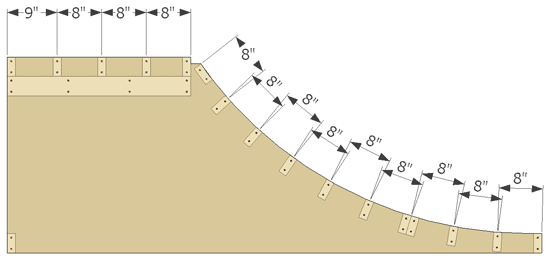
229 мм203 ммПодготовьте пятнадцать досок примерно 38 x 89 мм длиной 2,36 м для опор плоской секции. Также понадобятся две доски примерно 38 x 89 мм длиной 2,44 м для боковин плоской секции.
Прикрепите доски длиной 2,36 м к доскам длиной 2,44 м с шагом 203 мм по центрам, как показано ниже, чтобы закончить плоскую секцию.
Предварительно просверлите места под шурупы на концах досок сверлом 4,8 мм, чтобы древесина не раскололась.
Как и на радиусах, доски 38 x 89 мм нужно сдвоить в показанных местах под первый слой фанеры 9,5 мм.
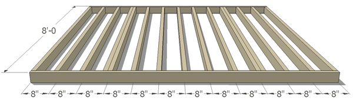
2,44 мшаг 203 ммТеперь, когда весь каркас готов, секции можно соединять между собой. Надеюсь, окончательное место для рампы уже подготовлено. Если нет, подробнее про основания для рамп можно узнать здесь.
Сначала попросите помощника передвинуть одну радиусную секцию на место. Затем поставьте рядом плоскую секцию. В конце установите вторую радиусную секцию рядом с плоской.
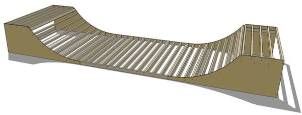
Если мини-рампа стоит на бетонной плите, радиусные и плоскую секции можно соединить шурупами 64 мм. Скрутите их снизу с каждой стороны, примерно по шесть шурупов на сторону.
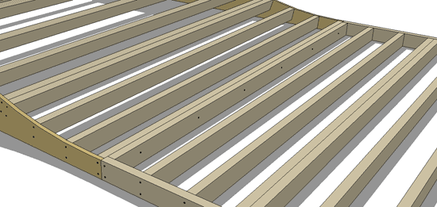
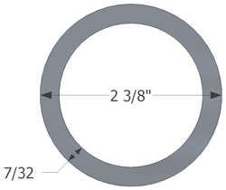
Чтобы найти сталь, ищите металлобазы, строительный металл, изготовителей металлоконструкций и похожие варианты.
Фактический размер нужной стальной трубы - наружный диаметр 60,3 мм и толщина стенки 5,6 мм. У поставщиков стали эта труба обычно называется...
черная стальная труба наружным диаметром 60,3 мм, серия 80
Некоторые продавцы стали придирчивы к названиям, поэтому используйте формулировку выше, если вас не понимают.
Можно использовать и трубу серии 40 (стенка 4,0 мм): она дешевле и легче, но может получить вмятины. Труба серии 80 при обычном катании не мнется.
Не используйте ПВХ-трубу (пластик) или электротехнический кабель-канал, если хотите, чтобы копинг служил долго.
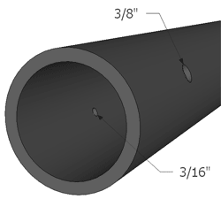
Разрежьте стальную трубу на две части длиной по 2,44 м, используя диск по стали (твердосплавный диск) и торцовочную или циркулярную пилу.
Теперь нужно закрепить стальной копинг на рампе. Ниже описаны два самых распространенных способа.
Первый способ - шурупы. Если все сделать правильно, шурупы будут надежно держать копинг весь срок службы рампы. При катании отверстия вы почти никогда не заметите.
Сначала отметьте трубу примерно в 76 мм от концов, затем примерно через каждые 610 мм между ними. Просверлите отверстие 9,5 мм с внешней стороны трубы и 4,8 мм с внутренней.
После сверления положите копинг в вырез на мини-рампе. Поверните трубу так, чтобы шурупы попадали в доску 38 x 89 мм ближе к центру. Затем вставьте шурупы в отверстия и плотно притяните трубу.
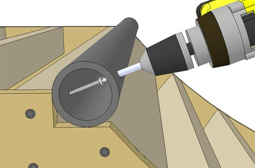
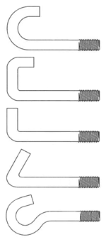
* Размеры на чертеже: отступы 38 мм и 152 мм; расстояние между средними точками 711 мм; отверстие 9,5 мм; длина болта около 76 мм.
Когда с копингом все готово, пора обшивать рампу. Начните с дек.
Обрежьте два листа фанеры толщиной 19 мм до ширины 838 мм. Прикрепите по листу к каждой деке рампы шурупами 41 мм. Располагайте шурупы примерно через 305 мм по нижним лагам.
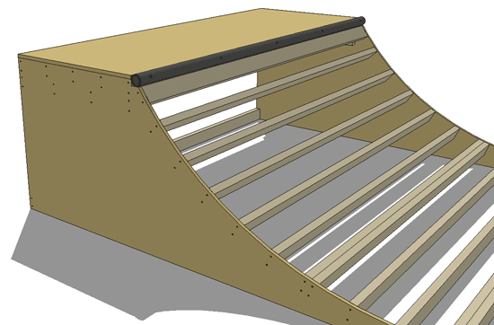
На втором слое стыки фанеры не должны совпадать со стыками нижнего слоя. Поэтому разрежьте лист фанеры 9,5 мм пополам и прикрепите его к рампе так же, как остальные.
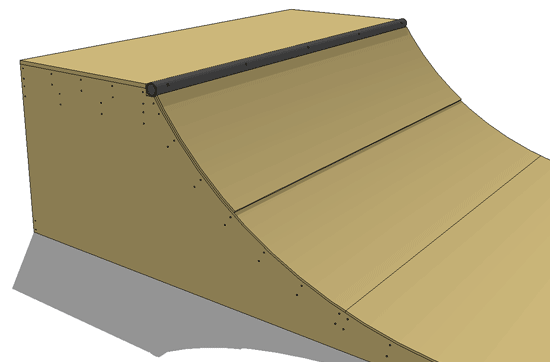
Положите на рампу лист фанеры 9,5 мм. Прижмите его вплотную к копингу и начните крепить шурупами 41 мм. Начинайте сверху и двигайтесь вниз, слева направо, как при чтении книги. Возможно, понадобится помощник, чтобы удержать лист, пока вы наживите первые шурупы.
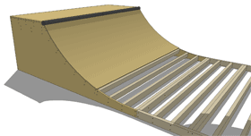
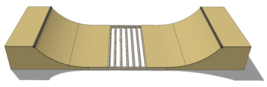
Начните с полного листа мазонита и прижмите его к копингу так же, как первый слой. Продолжайте добавлять листы до другой стороны. При необходимости снова подрежьте последний лист по месту.
Копинг должен выступать над поверхностью катания на 9,5 мм. Если он выступает слишком сильно, подложите деревянные клинья под мазонит рядом с копингом, чтобы поднять лист. Клинья продаются в строительных магазинах.
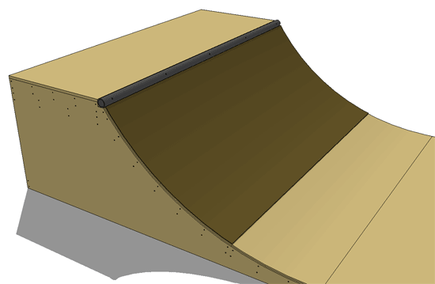
Перед катанием обязательно проверьте всю рампу. Меньше всего хочется уйти в слайд и наткнуться на торчащий шуруп.
Если вы дошли до этого этапа, вы стали владельцем новой мини-рампы 914 мм. Поздравляю с новой мини-рампой. Наслаждайтесь!
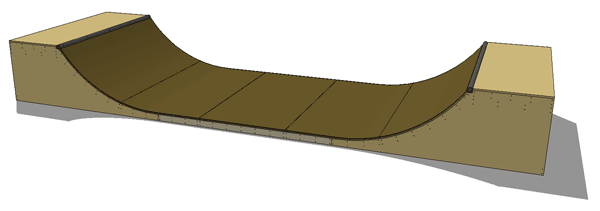
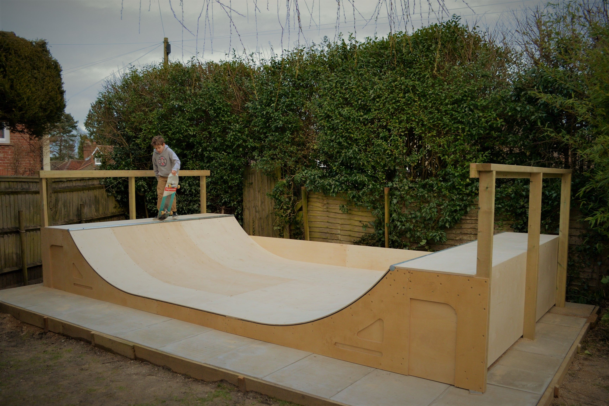
Фото: Tiia Monto, Wikimedia Commons, CC BY-SA 3.0.
Оригинальная страница: diyskate.com/mini_03.html